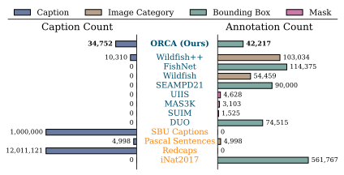
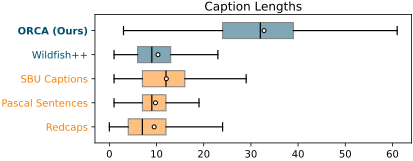

Overview

ORCA aims to enhance marine visual understanding for machine learning models. It aligns domain-specific challenges with core computer vision tasks, namely object detection, image grounding, and image captioning. The dataset includes 14,647 images covering 478 marine species (670 common names), annotated with 42,217 bounding boxes and 22,321 expert-verified positive captions, establishing a comprehensive benchmark for advancing computer vision in marine research.
Statistic
| #. of Images | #. of Species | #. of Boxes | #. of Captions (Refined / Positive / Negative) |
|---|---|---|---|
| 14,647 | 478 | 42,217 | 12,873 / 9,948 / 12,431 |
Table 1. Summary statistics of the
ORCA dataset. Captions are
categorized as Refined (expert-refined),
Positive (correct VLM-generated), or
Negative (incorrect VLM-generated).

| Dataset | Image Count |
Visual Annotation |
Linguistic Annotation |
Category Count |
Taxonomy Supported |
|---|---|---|---|---|---|
| Marine Domain Datasets | |||||
| DUO | 7,782 | BBOX | - | 4 | |
| SUIM | 1,525 | Mask | - | 8 | |
| MAS3K | 3,103 | Mask | - | 37 | |
| UIIS | 4,628 | Mask | - | 7 | |
| SEAMPD21 | 28,328 | BBOX | - | 130 | |
| Wildfish | 54,459 | Category | - | 1,000 | |
| FishNet | 94,532 | BBOX | - | 17,357 | |
| Wildfish++ | 2,348 | Category | Image-Level | 2,348 | |
| General-purpose Datasets | |||||
| Redcaps | 12,011,121 | - | Image-Level | - | |
| Pascal Sentences | 1,000 | Category | Image-Level | 20 | |
| SBU Captions | 1,000,000 | - | Image-Level | - | |
| iNat2017 | 859,000 | BBOX | - | 5,089 | |
| Ours | |||||
| ORCA (Ours) | 14,645 | BBOX | Instance-Level | 670 | |
Table 2. Statistic comparison of
ORCA with other general
and domain-specific datasets. Notably,
ORCA provides a
comprehensive marine domain dataset with detailed
instance-level annotations.

Citation
@misc{wong2025orcaobjectrecognitioncomprehension,
title={ORCA: Object Recognition and Comprehension for Archiving Marine Species},
author={Yuk-Kwan Wong and Haixin Liang and Zeyu Ma and Yiwei Chen and Ziqiang Zheng and Rinaldi Gotama and Pascal Sebastian and Lauren D. Sparks and Sai-Kit Yeung},
year={2025},
eprint={2512.21150},
archivePrefix={arXiv},
primaryClass={cs.CV},
url={https://arxiv.org/abs/2512.21150},
}